— ALGORITHM CONTEST / 07
第七章 数据结构
并查集、树状数组、线段树、平衡树、可持久化与那些名字奇怪但好用的结构。
01 / SECTION
什么是数据结构？
- 定义：数据元素之间的逻辑关系 + 在内存中的存储方式 + 定义在其上的操作集合。
- 三个层面：
- 逻辑结构：线性（表、栈、队列）、树、图、集合；
- 存储结构：顺序（数组）、链式（指针）、索引、哈希；
- 操作：增删改查 + 特定的高级操作（区间查询、合并等）。
- 选择标准：操作频率决定结构。读多写少用数组，频繁插入删除用链表，频繁按值查找用哈希/平衡树，区间查询用树状数组/线段树。
- 衡量指标：单次操作的最坏/均摊时间、空间、常数、实现难度（竞赛里“常数”经常决定 1e8 量级能否过）。
- 一句话：数据结构是“为了让某类操作变快，而额外付出的空间与维护成本”。
02 / SECTION
解析数据结构：八大数据结构分类
- 常见八种（教科书口径）：
- 数组：连续内存，随机访问 O(1)，插入删除 O(n)；
- 链表：结点 + 指针，插入删除 O(1)（已知位置），访问 O(n)；
- 栈：后进先出，只能在栈顶操作；
- 队列：先进先出，队尾入队、队头出队；
- 树：一对多的层次结构，二叉树/平衡树/堆；
- 图：多对多，顶点 + 边，最复杂也最通用；
- 哈希表：键值映射，均摊 O(1) 查找；
- 堆：完全二叉树，O(1) 取最值、O(log n) 插入/删除。
- 竞赛里实际会用到的扩展：树状数组、线段树、字典树、并查集、平衡树（Treap/Splay）、ST 表、单调栈/队列。
- 记法：先记“逻辑结构”四类（线性、树、图、集合），再记每类的典型实现。
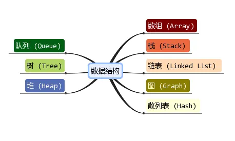
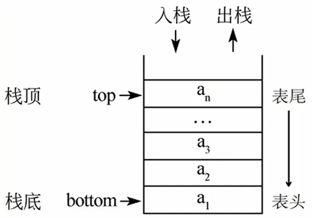
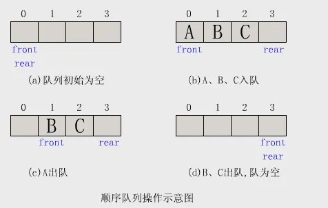
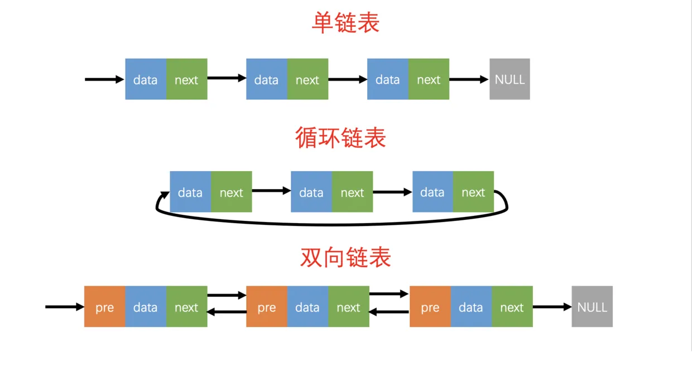
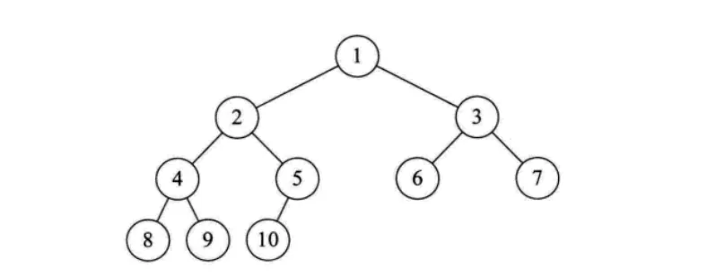
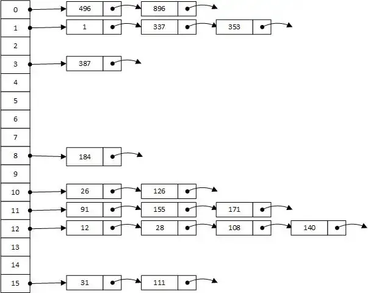
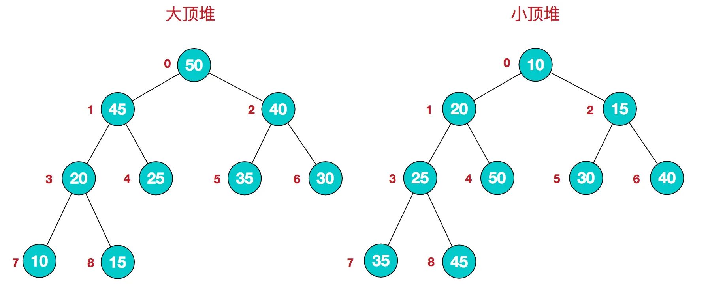
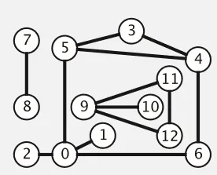
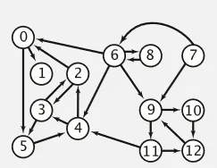
03 / SECTION
数据结构的特点
- 每种结构都有“用空间/维护成本换操作速度”的取舍：
- 数组：查询快、修改慢；
- 链表：修改快、查询慢；
- 哈希：查找快，但无序、不支持范围查询；
- 平衡树：什么都能做（
O(log n)），但常数大、代码长； - 堆：只快在“最值”这一件事上。
- 复杂度之外还要看：
- 均摊 vs 最坏（哈希最坏退化 O(n)，动态数组扩容是均摊 O(1)）；
- 常数与缓存局部性（数组遍历远快于链表遍历）；
- 可持久化/可合并等附加能力。
- 竞赛选型口诀：
- 静态区间求和 → 前缀和 / 树状数组；
- 动态区间修改+查询 → 线段树（带懒标记）；
- 合并集合 → 并查集；
- 维护最值并支持修改 → 堆 / 线段树；
- 字符串前缀 → 字典树。
04 / SECTION
栈的定义和特点
- 定义：只允许在一端（栈顶）插入和删除的线性表，遵循后进先出（LIFO）。
- 基本操作：
push（入栈）、pop（出栈）、top（取栈顶）、empty（判空），全部 O(1)。 - 两种实现：
- 数组栈：
int st[N], top，push: st[top++] = x；pop: --top；判空top == 0。最快最常用。 - 链栈：头插法建链，
top指向链头；无需预分配但每次 malloc。 - 应用：括号匹配、表达式求值（中缀转后缀）、进制转换、DFS 与递归、撤销操作、单调栈、浏览器前进后退。
- 常见坑：出栈前必须判空；数组栈要设容量上限（或动态扩容）；表达式求值时注意运算符优先级。
cpp
int st[N], top = 0;
void push(int x) { st[top++] = x; }
void pop() { if (top) --top; }
int getTop() { return st[top - 1]; }
bool empty() { return top == 0; }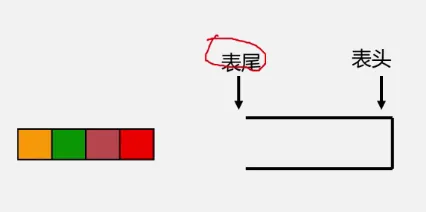
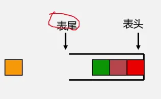
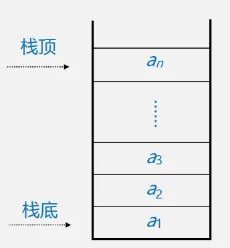
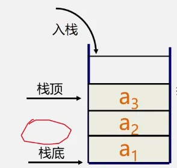
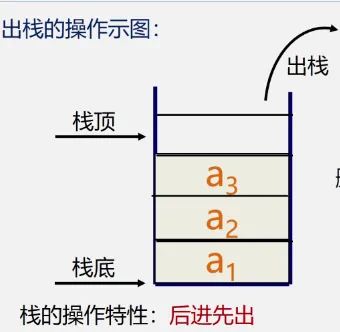
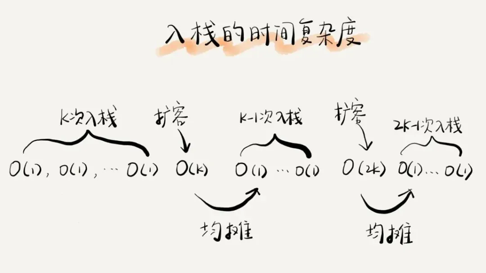
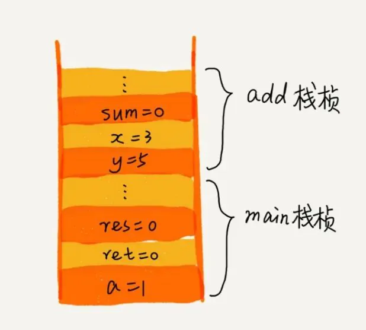
05 / SECTION
什么是队列？队列的应用
- 定义：只允许队尾入队、队头出队的线性表，遵循先进先出（FIFO）。
- 实现：
- 数组 + 两个指针（
head、tail），注意“假溢出”，用循环队列head = (head+1) % N； - 链表队列：尾插 + 头删，O(1)。
- 变体：
- 双端队列 deque：两端都能进出（单调队列的基础）；
- 优先队列：按优先级出队（堆实现）；
- 单调队列：维护滑动窗口最值。
- 应用：BFS 的扩展队列、任务调度、缓冲区、打印队列、滑动窗口最值、SPFA 的松弛队列。
- 判空条件：循环队列常用“留一个空位”或额外
size变量区分队满与队空。
cpp
int q[N], head = 0, tail = 0;
void push(int x) { q[tail] = x; tail = (tail + 1) % N; }
int pop() { int x = q[head]; head = (head + 1) % N; return x; }
bool empty() { return head == tail; }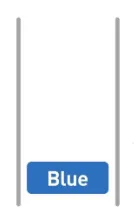
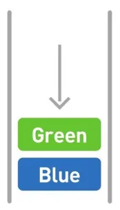
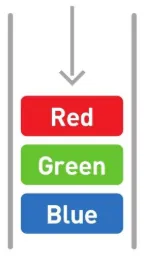
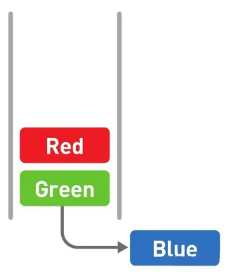
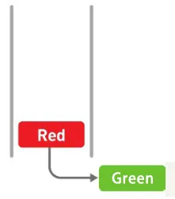
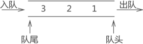
06 / SECTION
什么是链表？
- 定义：用“数据域 + 指针域”的结点串成的线性表，物理上不连续，逻辑上连续。
- 分类：单链表、双向链表、循环链表、静态链表（数组模拟）。
- 核心操作（单链表）：
- 头插：
p->next = head; head = p;； - 尾插：维护
tail，tail->next = p; tail = p;； - 删除：找到前驱
pre，pre->next = p->next; free(p);。 - 复杂度：按位置访问 O(n)，已知结点插入/删除 O(1)，头插/头删 O(1)。
- 竞赛写法：数组模拟链表（
nxt[i]、val[i]），避免指针与 malloc 的开销，且便于持久化/调试。 - 应用：邻接表存图、LRU 缓存（双向链表 + 哈希）、大整数存储、多项式、块状链表。
cpp
// 数组模拟单链表（头插）
int head = -1, nxt[N], val[N], tot = 0;
void addFront(int x) { val[tot] = x; nxt[tot] = head; head = tot++; }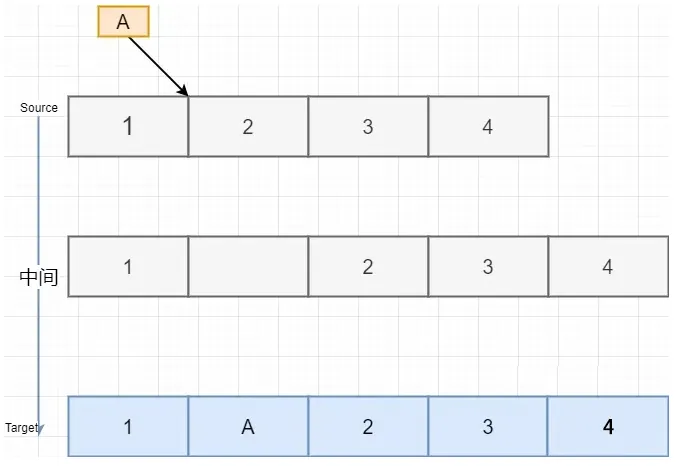
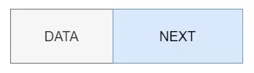
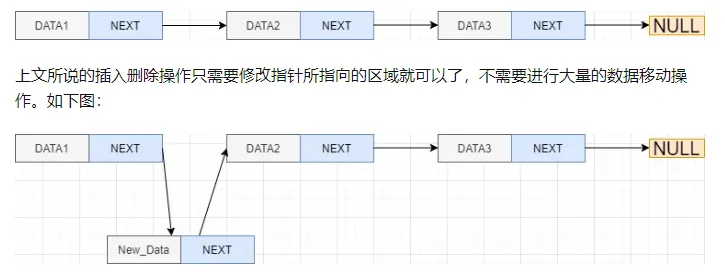
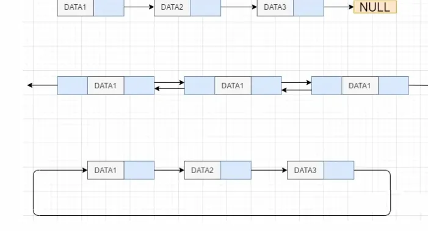
07 / SECTION
什么是哈希表？
- 定义：通过哈希函数把键映射到数组下标，实现均摊 O(1) 的插入、查找、删除。
- 两个核心问题：
- 哈希函数：除留余数法（模质数）、乘法取整、字符串哈希；
- 冲突处理：链地址法（拉链）、开放寻址（线性探测/二次探测）。
- 负载因子（元素数/表长）过高会退化，通常 > 0.7 就扩容（倍增 + 重新散列）。
- 复杂度：均摊 O(1)，最坏 O(n)（全部冲突）；C++
unordered_map有被构造数据卡成 O(n) 的风险。 - 竞赛替代：
- 值域小 → 直接用数组当哈希表；
- 需要防卡 → 手写哈希表（拉链 + 固定质数模）；
- 需要有序 →
map（红黑树，O(log n)）。 - 典型应用：去重、计数、两数之和、字符串匹配（哈希）、状态判重（BFS/DP）。
cpp
const int P = 1000003; // 质数
int head[P], nxt[N], key[N], val[N], tot;
void initHash() { memset(head, 0, sizeof head); tot = 0; }
void put(int k, int v) {
int h = (k % P + P) % P;
for (int i = head[h]; i; i = nxt[i]) if (key[i] == k) { val[i] = v; return; }
key[++tot] = k; val[tot] = v; nxt[tot] = head[h]; head[h] = tot;
}
int get(int k, int def = -1) { // 查不到返回 def
int h = (k % P + P) % P;
for (int i = head[h]; i; i = nxt[i]) if (key[i] == k) return val[i];
return def;
}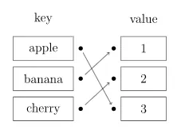
08 / SECTION
什么是“并查集” ？
- 定义：维护若干不相交集合，支持“合并两个集合”和“查询元素属于哪个集合”，近 O(1)。
- 两个优化：
- 路径压缩：查询时把路径上所有点直接挂到根上；
- 按秩/按大小合并：小的树挂到大的树下，保证树高 O(log n)。
- 两者结合后单次操作均摊
O(α(n))（α 为反阿克曼函数，实际可视为常数）。 - 扩展：
- 带权并查集：维护到根的距离/异或和（如“食物链”“奇偶游戏”）；
- 种类并查集：开多倍空间表示“敌人的敌人是朋友”；
- 可撤销并查集：按秩合并、不路径压缩，配合线段树分治。
- 应用：连通性判定、Kruskal 最小生成树、等价类合并、区间染色（配合
nxt数组跳跃）。
cpp
int fa[N];
int find(int x) { return fa[x] == x ? x : fa[x] = find(fa[x]); }
void merge(int a, int b) { a = find(a), b = find(b); if (a != b) fa[a] = b; }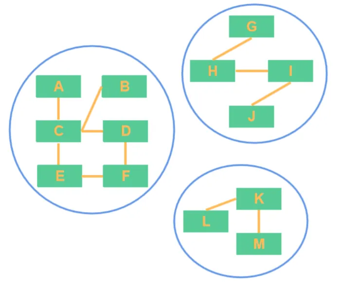
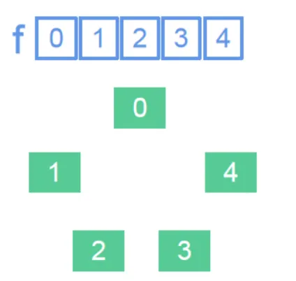
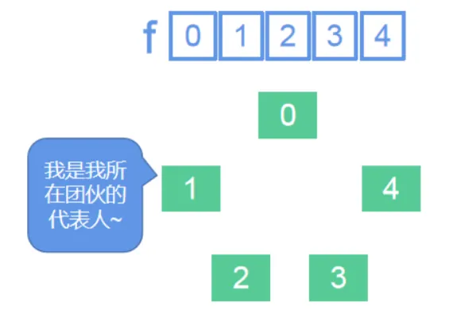
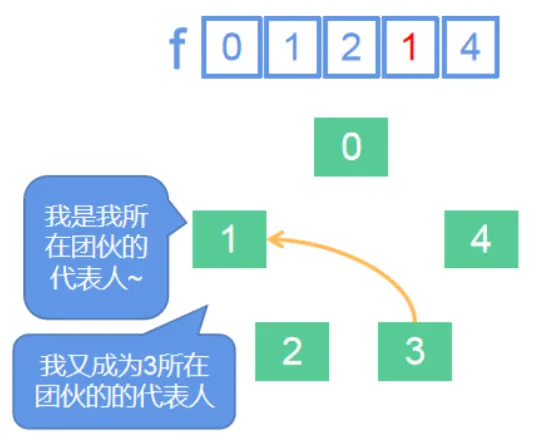
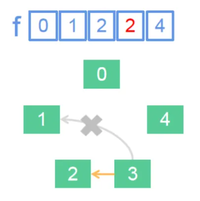
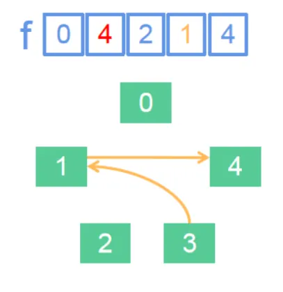
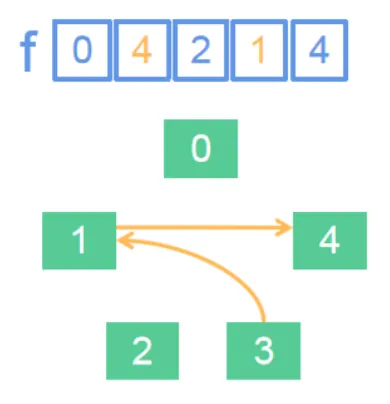
09 / SECTION
什么是单调栈?
- 定义：栈内元素保持单调递增或递减的栈；新元素入栈前弹出所有破坏单调性的元素。
- 用途：求每个元素“左边/右边第一个比它大（小）的元素”、柱状图最大矩形、接雨水、单调队列的构造。
- 复杂度：每个元素最多进出各一次 ⇒ 均摊 O(n)。
- 以“下一个更大元素”为例：维护递减栈，遇到比栈顶大的元素就不断弹出并记录答案。
cpp
int st[N], top = 0;
for (int i = 1; i <= n; ++i) {
while (top && a[st[top]] < a[i]) nxt[st[top--]] = i; // i 是它的下一个更大元素
st[++top] = i;
}- 与单调队列的区别：单调栈处理“最近的大于/小于关系”，单调队列处理“固定窗口的最值”。
- 常见变形：维护“区间最小值之和”“最大子矩阵”“矩形面积并”的前置计算。
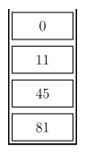
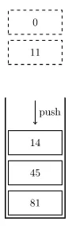
10 / SECTION
什么是跳表？
- 定义：在有序链表上叠加多层“索引链”，查询时从最高层开始跳跃下降，实现近似
O(log n)的查找/插入/删除。 - 结构：每层都是一个有序链表，上层是下层的“抽样”；每个结点随机决定“长到第几层”（概率 1/2 逐层晋升）。
- 复杂度：期望
O(log n)，空间期望 O(n)（每层的结点数按概率减半）。 - 优点：实现比平衡树简单、天然支持范围查询、并发友好（Redis 的 ZSet 就用跳表）。
- 缺点：常数比平衡树大，最坏 O(n)（随机性极端差时）。
- 竞赛中较少使用（有 Treap/Splay 或直接用
pb_ds），但需要“按排名查找 + 范围遍历”时很实用。
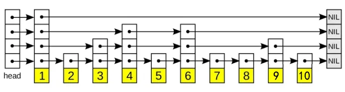
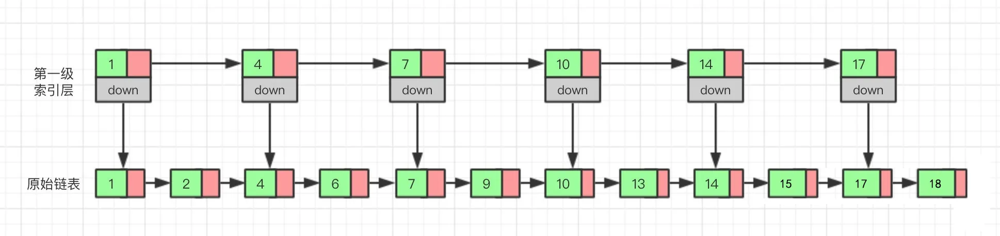
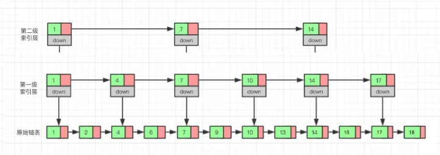
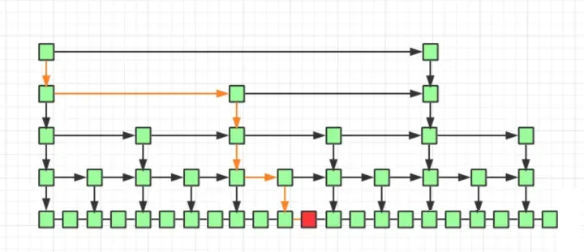
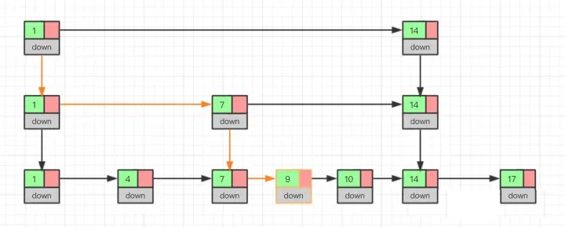
11 / SECTION
简述霍夫曼树
- 定义：给定 n 个带权叶子，构造一棵二叉树使带权路径长度（WPL）最小；权值大的离根近。
- 构造（贪心）：每次取权值最小的两个结点合并成新结点（权值 = 两者之和），放回集合，重复 n-1 次。
- WPL =
Σ w_i · depth_i，等于所有合并产生的新结点权值之和（这是最实用的计算方式）。 - 实现：小根堆
O(n log n)；若权值范围小可用双队列（两个有序队列，O(n)）。 - 应用：哈夫曼编码（前缀码，出现频率高的字符用短码）、文件压缩、以及“金条切割/合并果子”这类经典贪心题。
- 注意：哈夫曼树不唯一（相同权值时合并顺序不同），但 WPL 唯一。
- 常见错算：直接用
Σw·depth手算容易错，用“合并和”验证更可靠。
cpp
priority_queue<long long, vector<long long>, greater<long long>> q;
long long wpl = 0;
while (q.size() > 1) {
long long a = q.top(); q.pop();
long long b = q.top(); q.pop();
wpl += a + b; // 每次合并的代价累加即 WPL
q.push(a + b);
}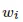
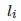
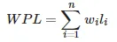
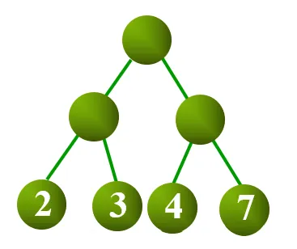
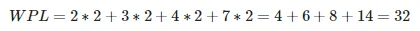
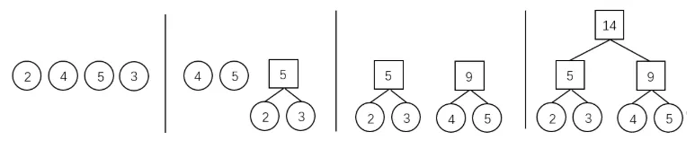
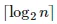


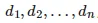
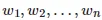
12 / SECTION
手指树的基本结构
- 来源：由 Ralf Hinze 与 Ross Paterson 提出的纯函数式序列数据结构（Finger Tree），是 Haskell 等函数式语言里的通用序列容器。
- 为何需要：函数式语言的列表只能高效做“头部”操作，两端增删、任意位置插入/删除、拼接、按条件查找、按位置拆分都很难做得好；手指树用一个结构把这些操作都压到对数级。
- 名字由来：手指（finger）是“指向序列端点附近结点”的结构，位于树的左右两端，因此两端访问与增删只需均摊常数时间（类似命令式语言里的指针）。
- 复杂度（原文口径）：两端访问/添加/删除均摊 O(1)，串联（concat）与随机访问 O(log n)。
- 结构层次：
- Digit（指）：存放 1~4 个元素的容器，位于树的边缘；
- Node：把 2~3 个元素打包成内部结点；
- FingerTree：
Empty | Single a | Deep (Digit) (FingerTree of Node) (Digit)，即“左指 + 子树 + 右指”，中间子树元素是 Node，可递归嵌套。 - 一个重要细节：手指树的“深度”是由下往上计数的，离根越近的结点指向原始树的子树越深，与常规树的层次方向相反；因此原始树必须保证统一深度（通常从平衡 2-3 树变形得到）。
- 灵活之处：内部结点可存“后代上的幺半群标记”，从而同时实现随机访问序列、有序序列、区间树和优先队列。
- 竞赛语境：极少考，但它是“可持久化 + 平衡结构”的漂亮范例；实战对应能力用 Treap/Splay/块状链表实现更简单。